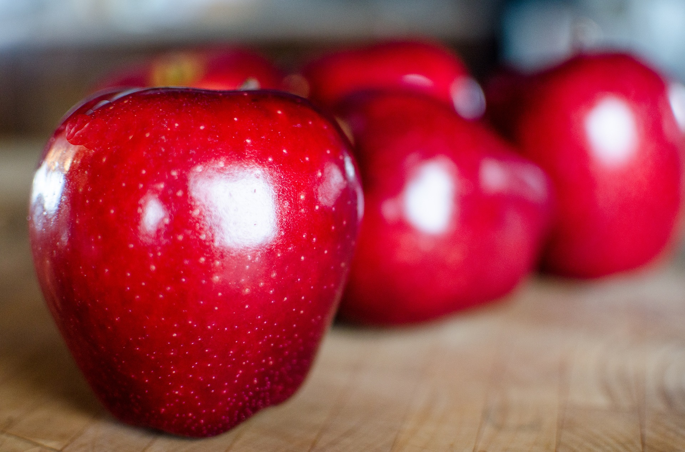
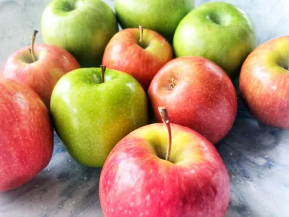

Os Benefícios da Maçã
A maçã é uma fruta deliciosa e nutritiva que oferece diversos benefícios à saúde. Rica em fibras, vitaminas e minerais, ela pode ajudar na digestão, fortalecer o sistema imunológico e contribuir para a saúde do coração.
Alguns dos principais benefícios da maçã incluem:
- Melhora da saúde digestiva devido ao alto teor de fibras.
- Fortalecimento do sistema imunológico por ser rica em vitamina C.
- Redução do risco de doenças cardíacas graças aos antioxidantes presentes na fruta.
- Auxílio na perda de peso, pois é uma fruta baixa em calorias e rica em água.
- Contribuição para a saúde bucal, ajudando a limpar os dentes e gengivas.
Incluir maçãs na dieta diária pode ser uma maneira fácil e saborosa de melhorar a saúde geral. Experimente diferentes variedades e descubra novas receitas para aproveitar ao máximo os benefícios desta fruta incrível.

